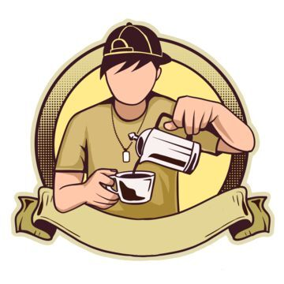

Serve thoughtfully
We aim to serve exceptional coffee and pastries in an environment that feels welcoming, calm, and inspiring to everyone who walks through our doors.
Nestled in the heart of the city, our coffee house is built around warm hospitality, exceptional coffee, and good company.

KAPEYU Coffee is the best coffee shop in the city of San Pablo and was founded in 2020 by a group of friends who shared a passion for coffee, community, and creating a space where people could slow down and enjoy the moment.
We believe that a great coffee experience is more than just taste. It is the aroma, the conversation, the atmosphere, and the care behind every cup. That belief shapes everything we do.
We aim to serve exceptional coffee and pastries in an environment that feels welcoming, calm, and inspiring to everyone who walks through our doors.
Every espresso, pastry, and corner of our café is designed to feel cozy, personal, and a little special.
Cosico Ave, Brgy. Del Remedio, San Pablo City.
4000 Laguna, Philippines
Mon – Fri: 7:00 AM – 7:00 PM
Sat – Sun: 8:00 AM – 6:00 PM